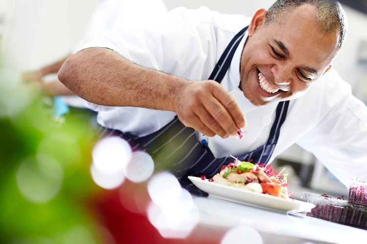
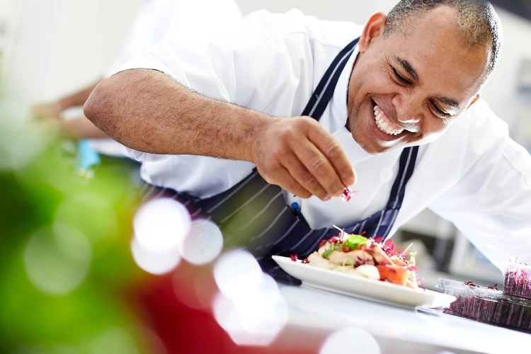
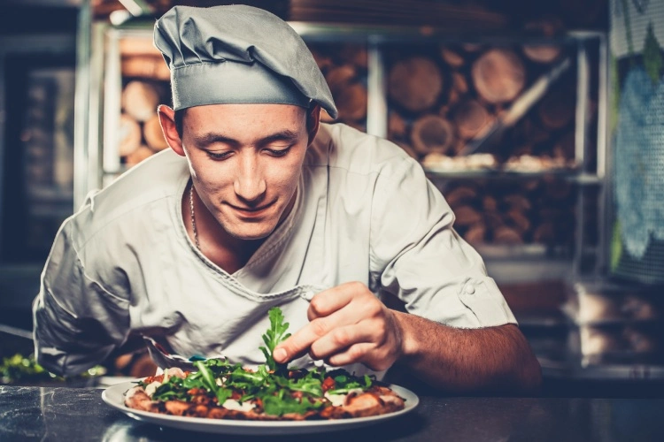
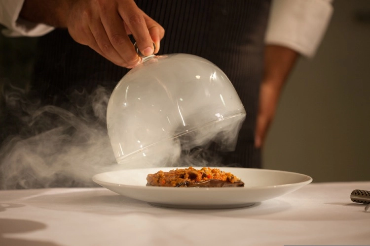
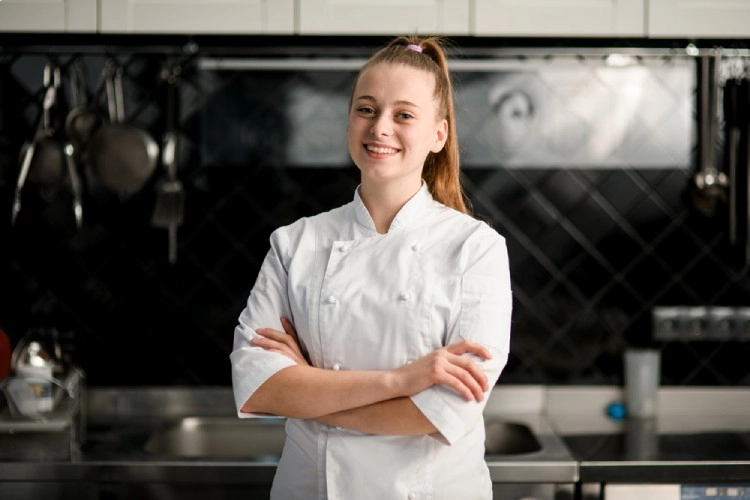
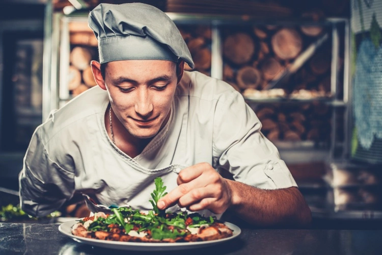
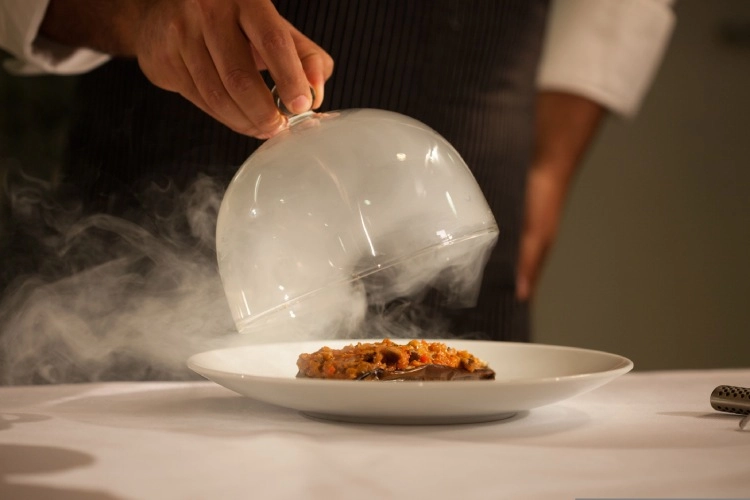
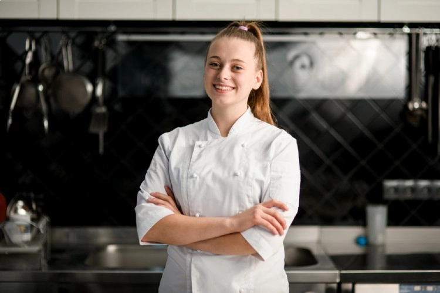

 





About us
Exquisite Elegance in the Heart of London
Welcome to La Citadelle, where we redefine the art of fine dining in the heart of London.
Nestled in one of the city's most iconic locations, our restaurant stands as a beacon of culinary excellence.
Step inside our restaurant, and you will find yourself immersed in an ambiance of luxury and sophistication.
With elegant décor, soft lighting, and an attentive service team, we set the stage for an unforgettable dining experience.
Our intimate dining spaces are perfect for romantic evenings, celebrations, or simply savouring the pleasure of refined cuisine.
An Ambiance of Luxury
Our culinary team is dedicated to crafting a symphony of flavours that reflect both tradition and innovation.
Led by our renowned Executive Chef, Antoine Delaunay, our kitchen is a hub of creativity and passion.
Every dish that leaves our kitchen is a masterpiece that showcases the finest local and seasonal ingredients.
Contact us
Join us at La Citadelle for an unforgettable journey of taste and elegance.
We invite you to reserve your table and experience a world of culinary delights that define the essence of fine dining.
At La Citadelle, we don't just serve meals; we create memories.
Come and indulge in the epitome of fine dining in London.
To book a private dining experience or inquire about hosting an event at our restaurant, please contact our events coordinator at
Reservations@LaCitadelle.com or call 02045135208
alternatively you can complete the online reservations form found on the bookings page Click here
We look forward to making your special occasion unforgettable.Every moment should be celebrated with elegance and style.
Let us create lasting memories for you and your guests.
Please note that availability for private dining may be subject to reservation and event planning.
Opening Times
| Day | Opens | Closes |
|---|---|---|
| Monday | 12:00 PM | 09:30 PM |
| Tuesday | 12:00 PM | 09:30 PM |
| Wednesday | 12:00 PM | 09:30 PM |
| Thursday | 12:00 PM | 09:30 PM |
| Friday | 12:00 PM | 11:00 PM |
| Saturday | 12:00 PM | 11:00 PM |
| Sunday | 12:00 PM | 09:30 PM |